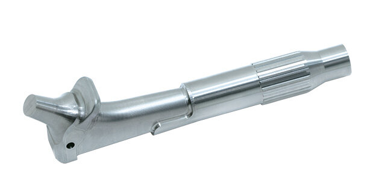

Precision Medical Manufacturing
Precision medical components
with full material traceability
Nupress machines implantable and non-implantable medical devices to exacting tolerances using biocompatible materials. Every component is manufactured with full material traceability, rigorous inspection documentation, and the care that life-critical applications demand.
What We Deliver
Life-critical precision
for medical applications
Our medical division applies the same precision-first philosophy that underpins our aerospace work to the manufacture of implantable devices, surgical instruments, and diagnostic equipment components.
-
Orthopaedic Implants Knee, hip, and spinal components in titanium and CoCr alloys
-
Surgical Instruments Precision-machined cutting tools, retractors, clamps, and forceps
-
Dental Components Implant fixtures, abutments and prosthetic frameworks
-
Diagnostic Equipment Precision housings, fixtures, and brackets for medical imaging devices
-
Biocompatible Material Handling Dedicated machining environments for implant-grade materials
-
Documentation Package Full CoC, material certs, inspection reports, and batch records

Technical Data
Medical Specifications
| Specification | Detail |
|---|---|
| Standard Tolerance | ±0.005mm linear |
| Achievable Tolerance | ±0.003mm with dedicated fixturing and enhanced CMM |
| Titanium | Grade 23 (Ti-6Al-4V ELI), Grade 5 (Ti-6Al-4V), Grade 2 CP |
| Stainless Steel | 316L ASTM F138, 17-4PH, 420 martensitic |
| Cobalt Chrome | ASTM F75 (cast), ASTM F1537 (wrought) |
| Polymers | PEEK (implant grade), UHMWPE, Delrin |
| Surface Finish | Electropolish, passivation, bead blast, HA coating (3rd party) |
| Inspection | CMM, surface profilometry, optical measurement |
| Traceability | Full heat and lot traceability, material certificates, batch records |
| Standards | ISO 13485 compatible processes, ASTM material standards |
Submit a medical manufacturing enquiry
Full documentation package available. NDA supplied on request.